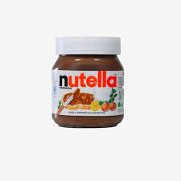

PEANUT BUTTER IS BETTER.
I think peanut butter is better then Nutella, because I think of peanut butter as being a breakfast food and when I have something for breakfast I do not want chocolate or something sweet.

I think peanut butter is better then Nutella, because I think of peanut butter as being a breakfast food and when I have something for breakfast I do not want chocolate or something sweet.
in my opinion, nutella is better than penut butter because nutella is much tastier and we can eat it in many various ways.
